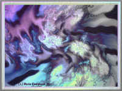

Terry Wright
Fever Dreams
When the sun’s rays pull light
apart like taffy and tendrils
extend, fingers of photons slunk
around continents and pink lace,
the day dawns and my lover awakens
and the scent of the world is sharp
not aged. The smell of toast
and coffee calls. Through screens
waxwings swarm the apple blossoms,
sweet and sticky. The land of milk
and honey risks clogging senses
but the sweat still wet on the sheets
imprints the fever of our passion like
the face of Christ on a white cloth
*
but prodigal night returns, pleased
its dark scrim blurs my senses like
power failures. I feel drained, blank
as the apparitions of lost children
leap from tree to tree, then perch
on the wire veins entwining over
our silent bedroom. A hum like
chrome life support equipment is
all I hear. My wet hair is strung
in clotted mats. A migraine beats
in 4/4 time. I get up, pour a drink,
sink in a recliner, punch the remote.
Flies crawl on kids with empty bowls.
Fever blisters cover their open arms. |

*Based on a fractal image: "Nice FeverDream
3" (1999) by Maria
Kjaergaard.
|